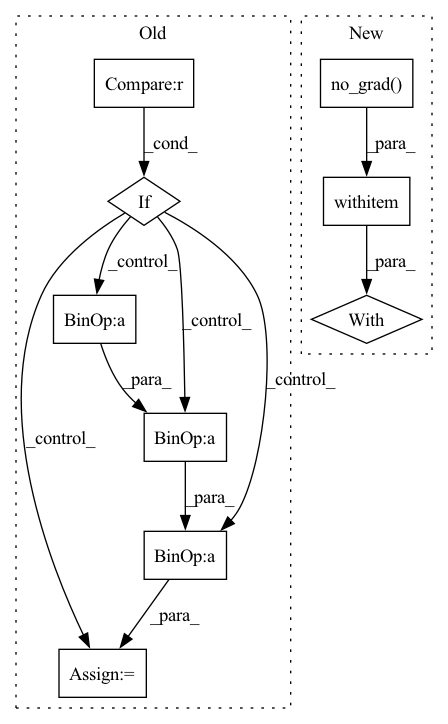

Pattern ID :11329

Before Change
try:
for img in downscaled_images:
if "_resized" in img:
result_path = (img.replace("_resized.png","") +
"_" + AI_model +
"_x" + str(upscale_factor) +
".png")
else:
result_path = (img.replace(".png","") +
"_" + AI_model +
"_x" + str(upscale_factor) +
".png")
// 1.5) calculating best slice number
img_tmp = cv2.imread(img)
After Change
tiles = slice_image(img, num_tiles)
// 4) upscale each tiles
with torch.no_grad():
for tile in tiles:
tile_adapted = adapt_image_for_deeplearning(tile.filename)
tile_adapted = tile_adapted.to(device, non_blocking = True)
tile_upscaled = model(tile_adapted)
In pattern: SUPERPATTERN
Frequency: 3
Non-data size: 9
Instances
Fragment ID: 38485579
Project Name: djdefrag/qualityscaler
Commit Name: 66cef0855cfbe41b27938a88cd316575f61f5507
Time: 2022-05-04
Author: jjluca96@gmail.com
File Name: QualityScaler.py
M Class Name: AnonimousClass
N Class Name: AnonimousClass
M Method Name: torch_AI_upscale_multiple_images(4)
N Method Name: torch_AI_upscale_multiple_images(4)
M Parent Class:
N Parent Class:
M File Name: QualityScaler.py
N File Name: QualityScaler.py
M Start Line: 563
M End Line: 616
N Start Line: 364
N End Line: 414
'>
Before Change
try:
for img in downscaled_images:
if "_resized" in img:
result_path = (img.replace("_resized.png","") +
"_" + AI_model +
"_x" + str(upscale_factor) +
".png")
else:
result_path = (img.replace(".png","") +
"_" + AI_model +
"_x" + str(upscale_factor) +
".png")
// 1.5) calculating best slice number
img_tmp = cv2.imread(img)
After Change
tiles = slice_image(img, num_tiles)
// 4) upscale each tiles
with torch.no_grad():
for tile in tiles:
tile_adapted = adapt_image_for_deeplearning(tile.filename)
tile_adapted = tile_adapted.to(device, non_blocking = True)
tile_upscaled = model(tile_adapted)
'>
Fragment ID: 38485515
Project Name: djdefrag/qualityscaler
Commit Name: 66cef0855cfbe41b27938a88cd316575f61f5507
Time: 2022-05-04
Author: jjluca96@gmail.com
File Name: QualityScaler.py
M Class Name: AnonimousClass
N Class Name: AnonimousClass
M Method Name: torch_AI_upscale_video_frames(4)
N Method Name: torch_AI_upscale_video_frames(4)
M Parent Class:
N Parent Class:
M File Name: QualityScaler.py
N File Name: QualityScaler.py
M Start Line: 620
M End Line: 673
N Start Line: 416
N End Line: 465
'>
Before Change
@staticmethod
def forward(ctx, x1, x2, mask, f1, f2, x3=None, f3=None):
if x3 is None:
inter1 = x2 + f1(x2, x2, mask)
inter2 = x1 + f2(x3, inter1, mask)
inter3 = x2 + f3(inter2)
return inter2, inter3
inter1 = x1 + f1(x2)
inter2 = x2 + f2(inter1)
After Change
function, x1, x2, mask = args
ctx.function = function
ctx.mask = mask
with torch.no_grad():
y1, y2 = ctx.function(x1, x2, mask)
Reversible.outputs = (y1, y2)
return y1, y2
'>
Fragment ID: 38485461
Project Name: rick-mccoy/reformer-pytorch
Commit Name: 4da6d0fcb3ce7e616d2e8cc9195b5b21dfd431cb
Time: 2020-01-10
Author: rickmccoy3141@gmail.com
File Name: model/reversible.py
M Class Name: Reversible
N Class Name: Reversible
M Method Name: forward(1)
N Method Name: forward(8)
M Parent Class: Function
N Parent Class: Function
M File Name: model/reversible.py
N File Name: model/reversible.py
M Start Line: 10
M End Line: 18
N Start Line: 13
N End Line: 20